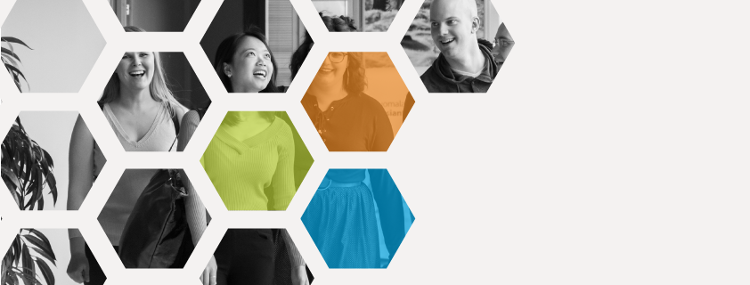

<ion-header>
  <ion-toolbar>
      <!-- Icon for the sidemenu -->
      <ion-buttons slot="start">
          <ion-menu-button></ion-menu-button>
        </ion-buttons>
    <ion-title>Extra Curriculum activities</ion-title>
  </ion-toolbar>
</ion-header>

<ion-content padding>
  Press on pictutes to see detail.
    <!-- Udemy picture as button -->
    
    <!-- ICT Summer School picture as button -->
    
  </ion-content>
<!-- Hao Nguyen - 1601800 -->
